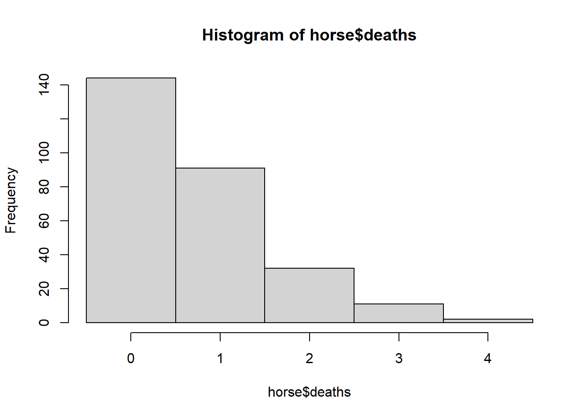
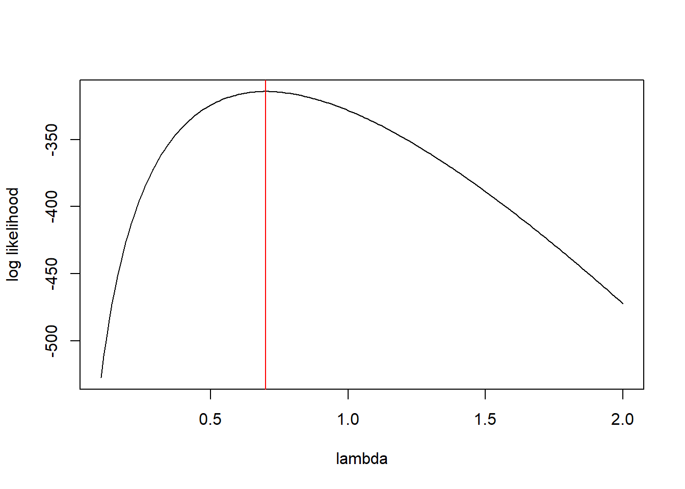

2 Horse-kick data
First import the data. Note that the pathname used here is specific to the file directory that was used to create this file. The pathname that you use will likely differ.
horse <- read.table("data/horse.txt", header = TRUE)Ask for a of the data to make sure the data have been imported correctly.
summary(horse)## year corps deaths
## Min. :1875 Length:280 Min. :0.0
## 1st Qu.:1880 Class :character 1st Qu.:0.0
## Median :1884 Mode :character Median :0.0
## Mean :1884 Mean :0.7
## 3rd Qu.:1889 3rd Qu.:1.0
## Max. :1894 Max. :4.0We can also learn about the data by asking to see the first few records using the command
head(horse)## year corps deaths
## 1 1875 GC 0
## 2 1876 GC 2
## 3 1877 GC 2
## 4 1878 GC 1
## 5 1879 GC 0
## 6 1880 GC 0or we can see the last few records using the command:
tail(horse)## year corps deaths
## 275 1889 C15 2
## 276 1890 C15 2
## 277 1891 C15 0
## 278 1892 C15 0
## 279 1893 C15 0
## 280 1894 C15 0Let’s plot a histogram of the values:
hist(horse$deaths,
breaks = seq(from = min(horse$deaths) - 0.5,
to = max(horse$deaths) + 0.5,
by = 1)) ## Calculate and plot the log-likelihood function
Create a function that calculates the log-likelihood for a value of \(\lambda\):
horse.ll <- function(lambda){
ll.vals <- dpois(x = horse$deaths, lambda = lambda, log = TRUE)
ll <- sum(ll.vals)
return(ll)
}We can use this function to calculate the log-likelihood for any value of \(\lambda\), such as \(\lambda = 1\):
horse.ll(1)## [1] -328.2462Let’s calculate the log-likelihood for many values of \(\lambda\), in preparation for making a plot. We’ll use a loop here, and not worry about vectorization.
# create a vector of lambda values using the 'seq'uence command
lambda.vals <- seq(from = 0.1, to = 2.0, by = 0.01)
# create an empty vector to store the values of the log-likelihood
ll.vals <- double(length = length(lambda.vals))
# use a loop to find the log-likelihood for each value in lambda.vals
for (i.lambda in 1:length(lambda.vals)) {
ll.vals[i.lambda] <- horse.ll(lambda.vals[i.lambda])
}Now plot the log-likelihood values vs. the values of \(\lambda\):
plot(ll.vals ~ lambda.vals, xlab = "lambda", ylab = "log likelihood", type = "l")
abline(v = 0.7, col = "red")
2.1 Find the MLE numerically using ‘optimize’
Note that Bolker’s book illustrates numerical optimization using the ‘optim’ function. The R documentation recommends using ‘optimize’ for one-dimensional optimization, and ‘optim’ for optimizing a function in several dimensions. So, we will use ‘optimize’ here.
horse.mle <- optimize(f = horse.ll, interval = c(0.1, 2), maximum = TRUE)The ‘optimize’ function returns a ‘list.’ A list is an R object that contains components of different types. We can see all the components of this list by printing it.
horse.mle ## $maximum
## [1] 0.7000088
##
## $objective
## [1] -314.1545So the numerically calculated MLE is \(\hat{lambda} \approx 0.7\). The ‘objective’ component of gives the value of the log-likelihood at that point.